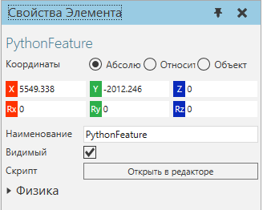
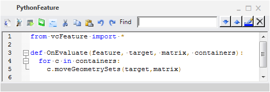
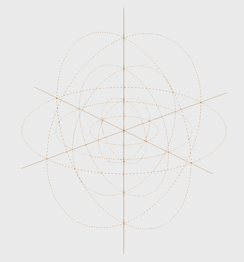

|
Элемент Python генерирует геометрию и преобразует дочерние элементы с помощью скрипта, написанного на Python.

Свойства
Название
|
Описание
|
Наименование
|
Определяет наименование элемента.
|
Скрипт
|
Определяет скрипт Python для элемента. Когда элемент изначально создается, сценарий инициализируется и идентичен элементу Преобразовать с пустым выражением.
Сценарий должен использовать событие OnEvaluate для создания геометрии, применения преобразований и передачи элемента и его подэлементов родительскому объекту.
|
Physics
|
Определяет набор физических свойств объекта.
|
События
Название
|
Параметры
|
Описание
|
OnEvaluate
|
vcFeature feature,
vcGeometryContainer target,
vcMatrix matrix ,
Список vcGeometryContainer containers
|
Инициируется перестроением дерева элементов компонента.
feature является объектом элемента Python.
target является контейнером геометрии родителя объекта. То есть любая геометрия, переданная целевому объекту, будет отображаться в объекте.
matrix — матрица локального преобразования признака.
containers представляет собой список подэлементов контейнеров геометрии. При создании самого элемента используется цикл for для передачи всей геометрии из подэлемента в цель.
|
Редактор
Чтобы получить доступ к редактору скриптов:
1.На панели Диаграммы компонентов, Дерево узлов компонента, найдите узел, содержащий элемент Python, которую вы хотите изменить, а затем выберите этот узел.
2.В Дереве элементов узла, найдите элемент Python, которую вы хотите отредактировать, а затем дважды щелкните этот элемент.
Редактор скриптов такой же, как и для Python Script.

Исходное состояниее редактора содержит фрагмент кода, который определяет событие OnEvaluate для работы в качестве элемента Преобразовать с пустым выражением:
from vcFeature import *
def OnEvaluate(feature, target, matrix, containers):
for c in containers:
c.moveGeometrySets(target,matrix)
|
Примеры
Пример. Создание пользовательских элементов математических фигур и визуальных инструментов

from vcFeature import *
import math, vcVector
def OnEvaluate(feature, target, matrix, containers):
'''Create custom line set in planes using 15 degree marks and axes'''
target.clear()
lineset = target.createGeometrySet(VC_COMPACTLINESET)
lineset.LineWidth = 1
##используйте единичный круг для создания линий в плоскостях xy, zx, yz
max_radius = 300
for radius in range(100,(max_radius+100),100):
line = []
for angle in range(0,375,1):
radAngle = math.radians(angle)
x = math.cos(radAngle)*radius
y = math.sin(radAngle)*radius
z = 0
point = vcVector.new(x,y,z)
line.append(point)
if len(line) == 2:
lineset.addLine(line)
for point in line:
point.Z = point.X
point.X = point.Y
point.Y = 0
lineset.addLine(line)
for point in line:
point.Y = point.X
point.X = 0
lineset.addLine(line)
line[:] = []
angle += 15
##генерировать линии для каждой оси на основе максимального радиуса и смещения
for i in ['x','y','z']:
p1,p2 = vcVector.new(),vcVector.new()
if i == 'x':
p1.X = max_radius+100
p2.X = -p1.X
elif i == 'y':
p1.Y = max_radius+100
p2.Y = -p1.Y
elif i == 'z':
p1.Z = max_radius+100
p2.Z = -p1.Z
lineset.addLine([p1,p2])
for c in containers:
c.moveGeometrySets(target,matrix)
|
|